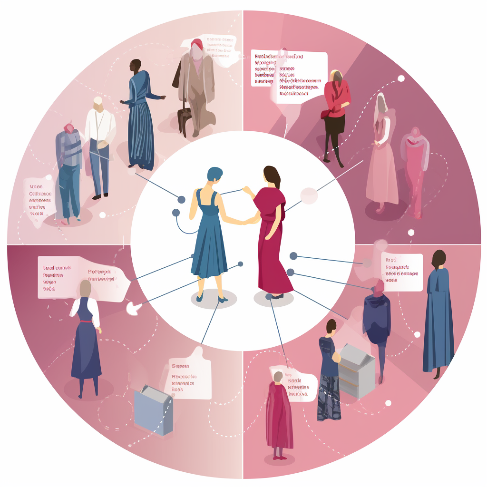

Unveiling the Power and Privacy of Language Models in Fashion
Understanding Language Models
Language models come in two flavours: LLMs and fine-tuned models. LLMs are big models trained on diverse data without specific adjustments for a particular task. On the other hand, fine-tuned models are smaller models tailored to a specific task. Fine-tuned models are like specialists, while LLMs are more like generalists. In the fashion world, the choice between LLMs and fine-tuned models depends on the specific requirements of the task at hand.
Practical Applications in Fashion
Language models have found their way into various fashion applications. They excel in natural language understanding, enabling them to comprehend fashion-related text and extract meaningful insights. Language models can also generate high-quality fashion content, such as writing articles, creating engaging social media posts, or assisting in chatbot interactions. Moreover, these models possess extensive knowledge about fashion trends and can assist in knowledge-intensive fashion tasks. Additionally, language models enhance reasoning abilities, helping in decision-making and problem-solving within the fashion industry.
Federated Learning and Privacy
 To address privacy concerns, federated learning offers a distributed approach where models are trained locally and aggregated to create a global model. This method allows fashion companies to utilise data from multiple sources while preserving user privacy. Different approaches, such as centralised, decentralised, and heterogeneous federated learning, provide distinct benefits and challenges. By applying techniques like differential privacy, fashion industry researchers can strike a balance between utility and privacy, ensuring that language models preserve the confidentiality of sensitive fashion-related information.
Conclusion
Language models have become a game-changer in the fashion industry. Their ability to understand and generate human-like language opens up a world of possibilities for fashion-related tasks. With advancements in privacy techniques like differential privacy and federated learning, language models can protect the privacy of user data while providing accurate and valuable insights. As the fashion industry embraces these technologies, we can expect further advancements in fashion content creation, trend analysis, and personalised fashion recommendations.